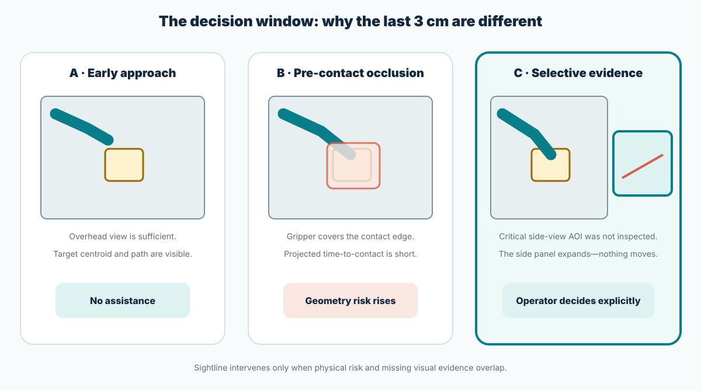
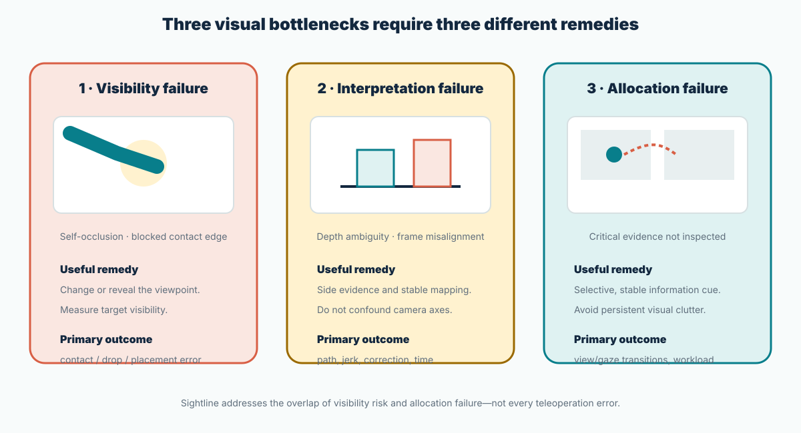
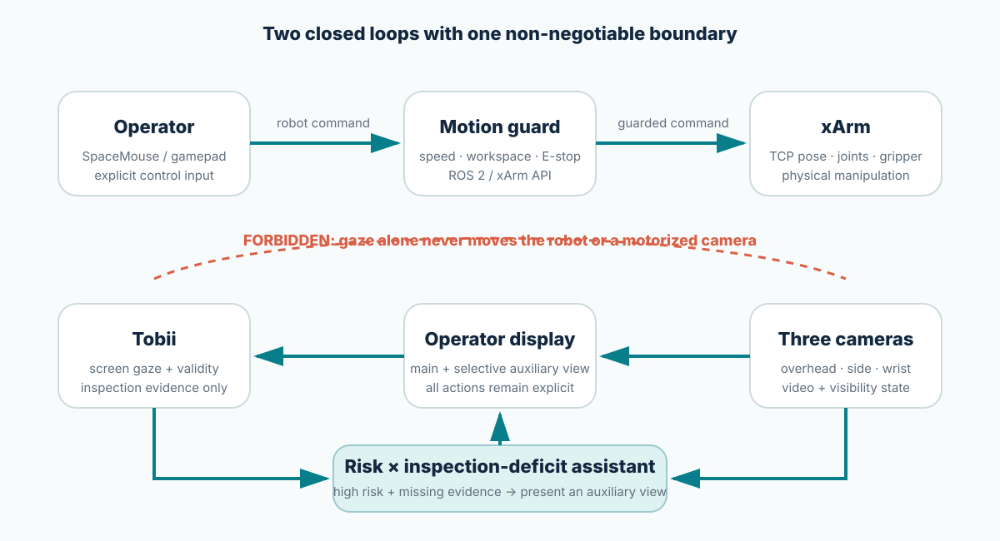
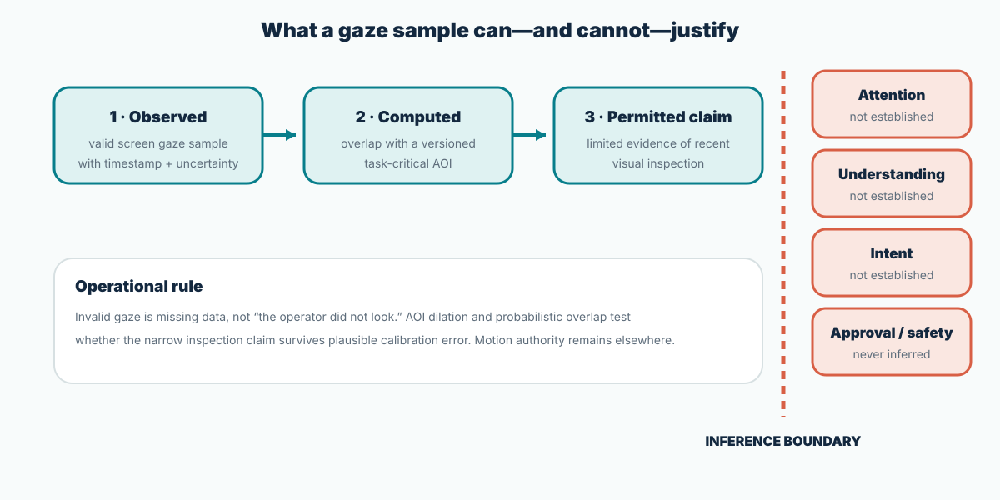

Self-occlusion
The arm, gripper, or payload covers the target or contact surface. A view that was sufficient during transport may fail during alignment.
Independent HRI study · xArm × Tobii · no VLA dependency
Sightline-xArm studies a narrow teleoperation problem: the main camera becomes least informative near contact, while a permanently visible multiview layout can impose its own search and switching cost. Tobii gaze is used only as limited evidence that a task-critical screen region has or has not been inspected. Combined with geometric risk, it can trigger an auxiliary side or wrist view. Gaze never generates robot motion.
The exact proposition
“Use Tobii with xArm” does not specify a scientific problem. The question below fixes the user, task, intervention, comparisons, and outcomes.
During screen-based xArm teleoperation of occluded pick-and-place tasks, can an auxiliary view triggered by the combination of geometric risk and missing inspection of a critical region reduce manipulation errors and visual-switching cost relative to manual switching, persistent multiview, and geometry-only assistance?
Out of scope: VLA training, natural-language control, gaze-to-target autonomous grasping, mind-state inference, and safety certification.
Concrete operating scene
Early in an approach, overhead video can be adequate. Close to contact, the gripper itself can occlude the edge needed to judge height and alignment. Sightline acts only inside this narrow decision window.

The operator approaches a foam block using the overhead feed. At approximately 3 cm, projected time-to-contact is short and the gripper hides the contact edge. The task graph marks that edge as the critical AOI, but no valid recent gaze sample overlaps it in the side feed. Sightline enlarges the side view at a fixed screen location. Robot velocity does not change until the operator moves the controller.
Why this problem exists
Teleoperation replaces direct perception with mediated views. A single view can hide contact geometry; several simultaneous views can shrink useful detail and increase visual search. The design problem is therefore evidence allocation, not camera count.

The arm, gripper, or payload covers the target or contact surface. A view that was sufficient during transport may fail during alignment.
A 2D feed can make height and gap ambiguous. A poorly aligned control–camera frame can create a separate mapping cost that must not be confused with the intervention.
Persistent multiview increases availability but may induce saccades, search, smaller panels, and divided monitoring. “Visible somewhere” is not the same as “inspected when needed.”
Mechanism
An assist is eligible only when two independently meaningful conditions overlap: the robot is approaching a visually risky state, and recent valid gaze does not provide evidence that the current task-critical region was inspected.

A transparent score combines normalized proximity \(r_d\), contact urgency \(r_T\), critical-surface occlusion \(r_O\), and task-phase gate \(r_q\). Weights are nonnegative and sum to one, keeping \(R(t)\in[0,1]\).
A versioned task graph defines the critical AOI \(a^\star(t)\). Coverage \(C_{a^\star}(t;W)\) combines valid gaze, recency, uncertain AOI overlap, and surface visibility. Missing gaze is never relabeled as “not seen.”
The interface expands one selected auxiliary feed, preserves the main view and controller mapping, and applies an explicit finite-state policy with onset persistence, minimum display time, release hysteresis, and cooldown. If gaze quality falls below threshold, C3 falls back to C2 geometry-only behavior.
Construct validity
Eye tracking provides coordinates with uncertainty. Even a well-calibrated AOI hit does not establish attention, comprehension, intent, or approval. The study deliberately makes only the narrowest useful claim.

Research gap
Gaze-based target selection, passive eye-tracking analysis, geometry-based viewpoint planning, and multiview ergonomics all have prior work. Novelty cannot rest on placing those components in one diagram.

GazeGrasp, GAMMA, goal prediction, and assistive-arm work use gaze to identify a target or action. Sightline leaves target selection and motion with the controller.
SEEV and workload studies use gaze as an outcome or retrospective explanation. Sightline closes a limited loop through display adaptation.
Geometry-based methods optimize visibility and occlusion. Sightline treats that family as C2, not as an omitted weak baseline.
Camera-layout studies establish performance–workload trade-offs. Sightline asks who needs which view at which phase.
Conditional contributions
These are candidate contributions, not completed achievements. Each is promoted to a paper claim only if the preregistered comparison supports it.
An interpretable non-command policy that combines physical scene risk with limited evidence of missing task-critical inspection.
A controlled within-subject study of manual, persistent, geometry-only, and gaze-plus-geometry camera policies on a physical arm.
A synchronized schema joining gaze, interface, video, controller, robot telemetry, AOIs, faults, and physical outcomes.
Evidence about where selective assistance helps, does nothing, or disrupts control across occlusion, experience, and tracking quality.
Feasibility decision
The xArm/Tobii combination fits this question without VLA. Execution remains gated by exact hardware, analytical-use rights, synchronization quality, a valid task difficulty range, ethics review, and independent robot-safety controls.
The project is complete as a research specification, not as a validated system. Its strength is the clear causal comparison; its current weakness is unverified inventory and licensing.